History of Python
Python is a widely-used general-purpose, high-level programming language. It was initially designed by Guido van Rossum in 1991 and developed by Python Software Foundation. It was mainly developed for emphasis on code readability, and its syntax allows programmers to express concepts in fewer lines of code.
In the late 1980s, history was about to be written. It was that time when working on Python started. Soon after that, Guido Van Rossum began doing its application-based work in December of 1989 at Centrum Wiskunde & Informatica (CWI) which is situated in the Netherlands. It was started firstly as a hobby project because he was looking for an interesting project to keep him occupied during Christmas. The programming language in which Python is said to have succeeded is ABC Programming Language, which had interfacing with the Amoeba Operating System and had the feature of exception handling. He had already helped to create ABC earlier in his career and he had seen some issues with ABC but liked most of the features. After that what he did was really very clever. He had taken the syntax of ABC, and some of its good features. It came with a lot of complaints too, so he fixed those issues completely and had created a good scripting language that had removed all the flaws.
Why is Python
Python is easy to learn
It uses a simplified syntax with an emphasis on natural language, for a much easier learning curve for beginners. And, because Python is free to use and is supported by an extremely large ecosystem of libraries and packages, it's often the first-choice language for new developers.
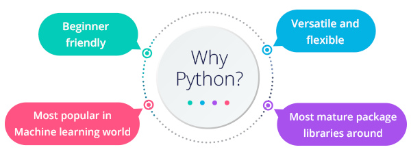What Python can do
Python is commonly used for developing websites and software, task automation, data analysis, and data visualization. Since it's relatively easy to learn, Python has been adopted by many non-programmers such as accountants and scientists, for a variety of everyday tasks, like organizing finances.
How to install Python
Download from : https://www.python.org
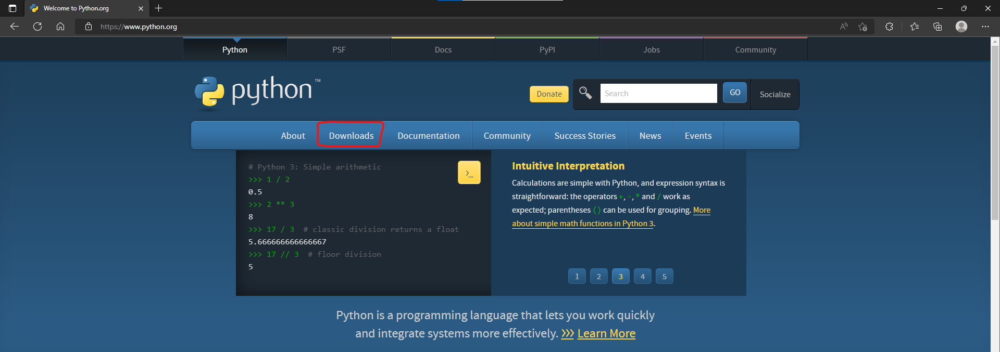 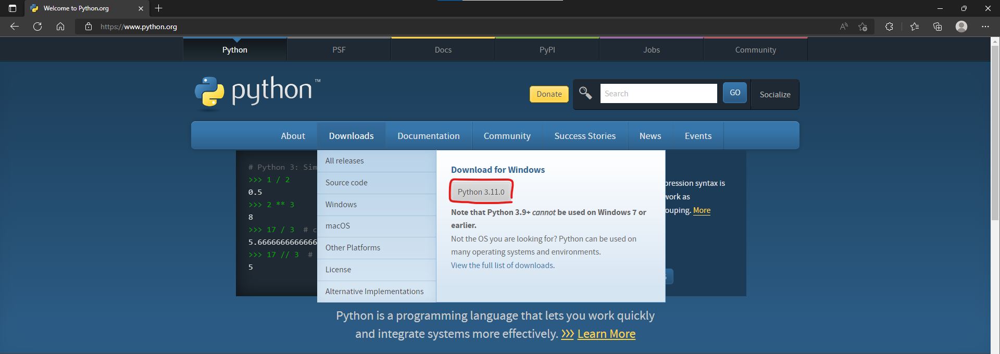 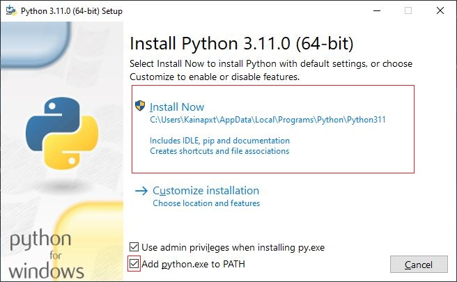Recommended for beginner
Try this! Google Colab
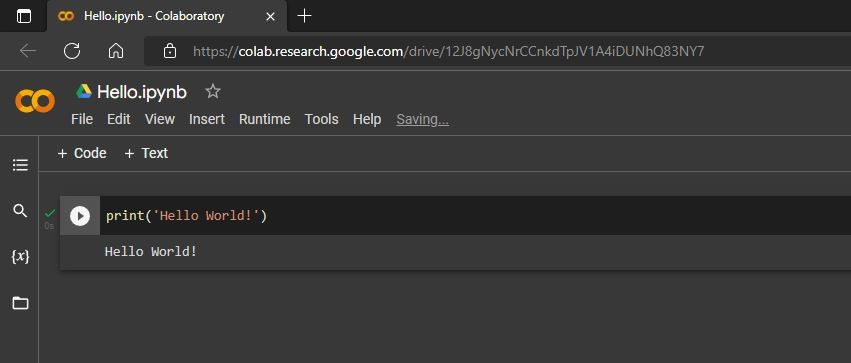Visual Studio Code
Visual Studio Code, also commonly referred to as VS Code, is a source-code editor made by Microsoft with the Electron Framework, for Windows, Linux and macOS. Features include support for debugging, syntax highlighting, intelligent code completion, snippets, code refactoring, and embedded Git. Users can change the theme, keyboard shortcuts, preferences, and install extensions that add additional functionality.
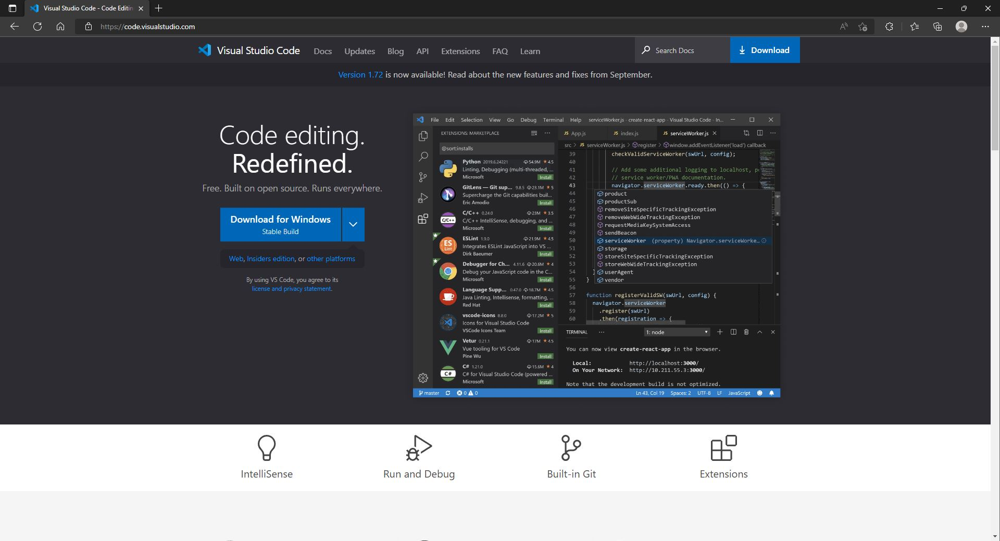Download from : https://code.visualstudio.com
Github
GitHub is an online software development platform. It's used for storing, tracking, and collaborating on software projects.
It makes it easy for developers to share code files and collaborate with fellow developers on open-source projects. GitHub also serves as a social networking site where developers can openly network, collaborate, and pitch their work.
Why Github
This is where hosting services like GitHub,Bitbucket, and GitLab come in. They provide a home for your Git-based projects on the internet. If you have no idea what I’m talking about, think of it as DropBox but much, much better. The remote host acts as a distribution channel or clearinghouse for your Git-managed project. It allows other people to see your stuff, sync up with you, and perhaps even make changes. These hosting providers improve upon traditional Unix Git servers with well-designed web-based interfaces.
Python Print Command
Print Command
- Print String
- Print Numeric
- Print String + Numeric
- Print String + String
- Print Numeric + Numeric
Print String
Basic Print String Python will use code *** print ('message') or print ("message") ***
If you want your message to contain a single quote, use a double quote to cover the text. And If you want your message to contain a double quote, use a single quote to cover the text.
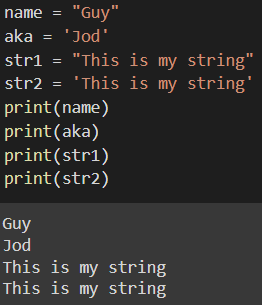Print Numeric
Python Numbers there are three types of numeric data types in Python:
- int stores positive and negative integer numbers.
- float stores numeric values with decimal points.
- Complex stores imaginary numeric values. with the letter 'j'
Print String + Numeric
Print String + Numeric It takes a comma, followed by a String or numeric. *** print('numeric',"string") or print ("8,'ABC', 96, 74, 'EFG'") ***
Example of using Print String + Numeric *** str() it's mean The text inside the brackets will be String. ***
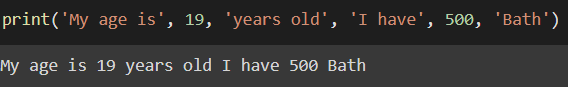Print String + String
Print String + String Use comma or + steps between messages. *** print('Hello',"How",'Are',"You") or print('Hello'+"How"+'Are'+"You") ***
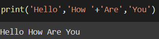Print Numeric + Numeric
Print String + String Use comma steps between messages. *** print(8,9,10,11) ***
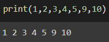Input
The input() function takes input from the user and returns it.
Example
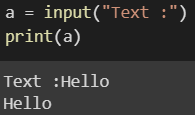